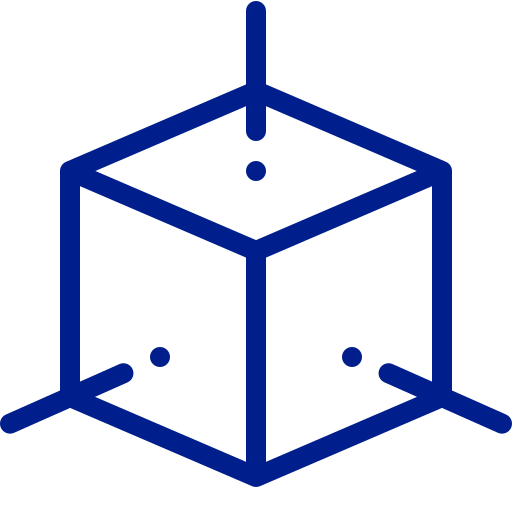
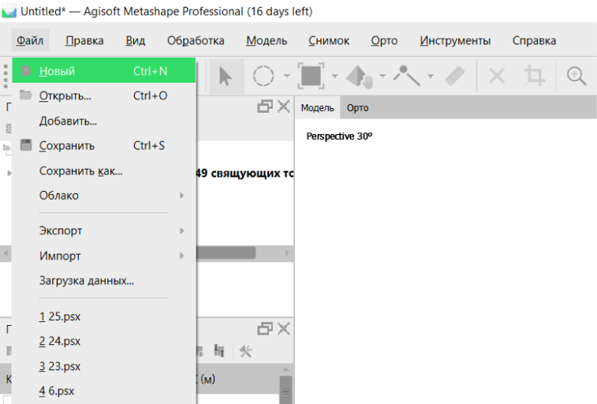
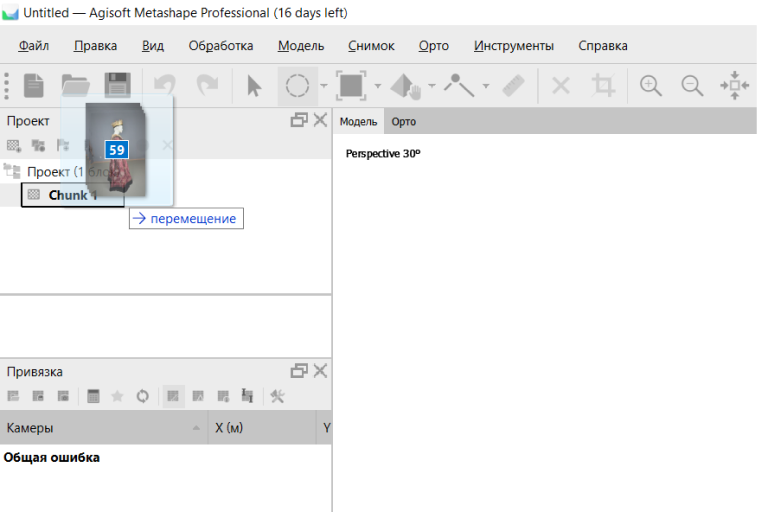
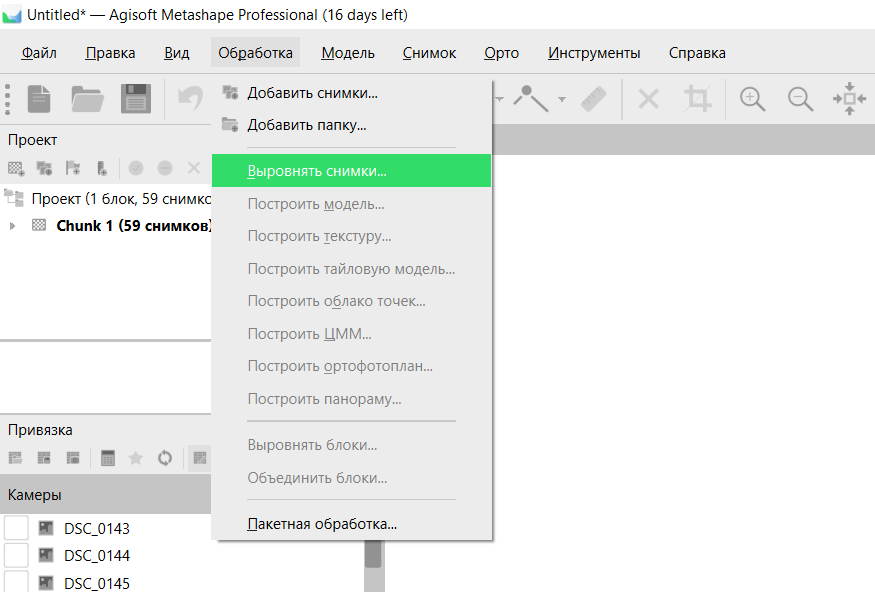
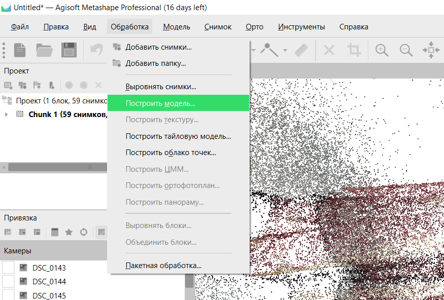
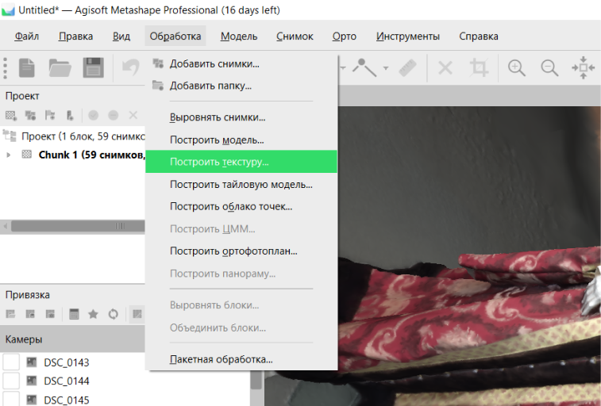

Что это такое?

Процесс создания трехмерной модели человеческого тела с использованием технологий компьютерного зрения и компьютерной графики.
Данный процесс обычно начинается с получения множества двумерных фотографий или сканирования тела человека с помощью 3D сканера.
Затем, с помощью специального программного обеспечения, создается трехмерная модель, которая в дальнейшем может быть использована в медицине, научных исследованиях, кинопроизводстве, игровой индустрии и других областях.
Как это работает?
Agisoft Metashape - это программа для создания 3D моделей на основе фотографий.
Следуя этим
инструкциям, вы сможете создать свою собственную 3D модель:

1. Создаем проект в Agisoft Metashape.

2. Импортируем фотографии, которые будем использовать для создания 3D модели. Обычно это должно быть не менее 50 фотографий, сделанных со всех сторон объекта.

3. Выбираем пункт меню "Выровнять снимки" и ждем, пока программа обработает все фотографии и построит облако точек.

4. Далее выбираем "Построить модель" и ждем, пока программа построит 3D модель.

5. Далее выбираем «Построить текстуру» и ждем, пока программа построит созданную ранее 3D модель с текстурой.
Процесс создания на примере платья